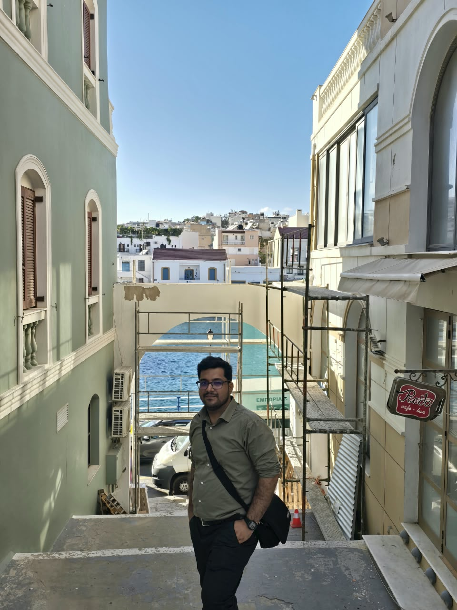

Open to postdoctoral positions
Kumar Gaurav Mishra
PhD Candidate, Environmental Science and Engineering, IIT (ISM) Dhanbad
I study the chemistry, thermodynamics and sources of PM2.5 and PM10 in coal-industrial airsheds, from field sampling to aerosol thermodynamic modelling.

01Research
Coal mines, coke ovens, power plants, brick kilns, traffic and household fuels all release particles into the same shallow boundary layer. What those particles do to lungs and to clouds depends on what they are made of and how they age: how much water they hold, how acidic they become, and which gases they trade with the air around them.
Fine particulate matter is a leading environmental health risk in India, and the Indo-Gangetic Plain carries some of the highest PM2.5 burdens in the world. Coal regions add their own signature: dust from open-cast mining, smoke from coal fires and combustion, and secondary aerosol formed from SO2 and NOx. Separating those contributions needs source profiles measured locally, not borrowed from elsewhere.
At the Aerosol Lab, IIT (ISM) Dhanbad, I follow PM2.5 and PM10 in Dhanbad, India's coal capital. The core dataset is one year-long field campaign of paired PM2.5/PM10 sampling, March 2023 to March 2024 (N = 131), studied through its chemical, optical, isotopic and thermodynamic properties. Aerosol pH, liquid water content and gas–particle partitioning come from ISORROPIA-II and HETP v1.0, cross-checked against E-AIM and MOSAIC's MESA/MTEM, with counterfactual runs that isolate how non-volatile cations control nitrate.
Current work covers thermodynamic modelling of aerosol acidity and nitrate partitioning, source apportionment built on locally measured source profiles, and particle hygroscopicity.
I designed and commissioned the Aerosol Lab (layout, instrument siting, power and UPS planning, procurement) and run it day to day. Multiple sampling campaigns run in parallel, covering ambient air and primary emission sources.
Methods
-
Chemical
Water-soluble ionic composition (IC), OC/EC by thermal-optical reflectance, and metals by ICP-AES and ED-XRF.
-
Optical
Light absorption and source-resolved optical characterisation of carbonaceous aerosol.
-
Isotopic
Carbon isotope (δ13C) analysis to attribute carbonaceous fractions to their sources.
-
Thermodynamic
Aerosol pH, liquid water content and gas–particle partitioning with ISORROPIA-II and HETP v1.0.
-
Source apportionment
Emission source profiling; PMF and ME-2 receptor modelling (in progress).
-
Transport
HYSPLIT and TrajStat back-trajectory cluster analysis linking air-mass origin to aerosol composition.
Toolkit
- Python (primary)
- pandas, NumPy, matplotlib, seaborn, scikit-learn, statsmodels, SciPy
- Spatial analysis
- geopandas, QGIS
- R (specialised)
- openair, ggplot2
- Atmospheric modelling
- ISORROPIA-II / HETP v1.0 (aerosol thermodynamics); PMF / ME-2 (receptor modelling); HYSPLIT / TrajStat (back-trajectories)
- Laboratory
- Ion chromatography (IC), thermal-optical reflectance (TOR), ICP-AES, ED-XRF, stable carbon isotope analysis (δ13C)
- Documents
- LaTeX (manuscripts, reports, presentations), Microsoft Office
02PhD Journey
Workshops, conferences and publications from 2023, ending with thesis submission due December 2026.
- workshop
- conference
- publication
- international
03Publications
Peer-reviewed
- Mishra, K. G., Izhar, S., Paul, D., Qadri, A. M., Gupta, T. (2025). Insights on optical absorption and isotopic properties of carbonaceous aerosol in PM2.5 and PM10 from different emission sources. Environmental Pollution, 382, 126558. doi:10.1016/j.envpol.2025.126558
- Mishra, K. G., Prakashmani, Gupta, T., Izhar, S. (2024). Source profile of PM2.5 emissions from different primary sources in the coal capital city Dhanbad, India. Atmospheric Environment: X, 21, 100235. doi:10.1016/j.aeaoa.2024.100235
Under review
- Mishra, K. G., et al. Non-volatile cation buffering controls seasonal aerosol acidity, water content and nitrate partitioning in the coal-industrial eastern Indo-Gangetic Plain. Environment International (under review; ENVINT-D-26-04594).
In preparation
- Source apportionment of PM2.5 and PM10 (PMF/ME-2) using locally measured Dhanbad source profiles.
- Hygroscopicity (κ) of PM2.5 and PM10 in a coal-industrial environment.
Conference presentations
- Nitrate limitation and influence of air mass origins on aerosol pH and ALWC in a coal mining cityOral (Abstract #822), iCACGP–IGAC 2026 Joint Science Conference, Heraklion, Crete, Greece. Mishra & Izhar.
- Influence of air mass on atmospheric thermodynamics and secondary aerosol formation in a complex industrial environmentAccepted oral (ID 37364, Session A-21), 12th International Aerosol Conference, Xi'an, China, 2026; abstract published, not presented. Mishra & Izhar.
- Influence of meteorological variables on PM2.5 under sparse observation regimes: nonparametric statistics and machine learningPoster, India Clean Air Summit (ICAS 2025), CSTEP, Bangalore. Mishra & Izhar.
- Optical and isotopic source profile in size-segregated traffic and combustion sources in DhanbadPoster (24IA11230), IASTA 2024, Dehradun. Mishra, Izhar, Paul, Qadri & Gupta.
- Effect of emission sources and size on carbonaceous aerosol optical and isotopic characteristicsOral, 13th Asian Aerosol Conference (AAC 2024), Kuching, Malaysia. Izhar, Mishra, Paul & Gupta.
- Source profile of carbonaceous PM2.5 emissions from different primary sources in the coal capital city Dhanbad, IndiaPoster (T3017), IASTA National Conference 2023, Mumbai. Mishra, Prakashmani, Gupta & Izhar.
Full list on Google Scholar and ResearchGate.
04Teaching
Python for data analysis
Two three-day modules for the same cohort: basic in February, advanced in March. I taught both end to end, from loading raw data into pandas through cleaning, exploration and descriptive statistics, correlation, and plotting with matplotlib and seaborn, all on the company's own operational data.
Scientific writing in LaTeX and literature search
TA in Prof. Vithal Hari's part of the course on scientific writing, built around LaTeX with offline compilation rather than Overleaf alone. I took the tutorial on defining and writing the sections of a paper and was the main grader for the LaTeX assignment: 66 submissions (36 MTech, 30 PhD), marked on sectioning, floats, lists, cross-referencing, BibTeX citations, clean compilation and structure.
I also ran a session on literature search for systematic reviews and for students' own research: finding journals and papers in Scopus and Web of Science, building keyword and search strings, filtering and sorting results, and keeping a literature-review matrix.
Statistics in Excel
The lab runs four tracks (MATLAB, Excel, Python and R) and I ran the Excel track, with theory and hands-on work in each weekly session. In 2025–26 that was three lectures with labs on correlation and linear regression, descriptive statistics, and hypothesis testing, followed by a data-analysis assignment graded on students' inferences, not just their numbers.
Air and noise pollution laboratory
Ran the practicals for two full batches: ambient particulate and gaseous sampling, gravimetric and chemical analysis, and noise measurement, with students operating the instruments themselves.
Teaching assistantships
- Winter 2025–26
- Environmental Computational Lab (NESC511)
- Monsoon 2025–26
- Cleaner Energy (ESD405)
- Winter 2024–25
- Air Pollution (NESC103); Air and Noise Pollution Lab (NESC104); Research Methodology (NESC595/596); Environmental Computational Lab (NESC511)
- Monsoon 2024–25
- Aerosols in the Atmosphere (ESD511); Cleaner Energy (ESD405); Air and Noise Pollution Lab (ESC252)
- Winter 2023–24
- Research Methodology (ESC526)
- Monsoon 2023–24
- Aerosols in the Atmosphere (ESD511); Cleaner Energy (ESD405)
Instruments taught hands-on
In the Aerosol Lab, IIT (ISM) Dhanbad, and at the institute's CRF/IRH facility (ICP-AES):
- Respirable dust sampler (PM10)
- APM 550M dual PM2.5/PM10 sampler
- N-FRM PM2.5 sampler
- MOUDI cascade impactor
- APM 441 gaseous sampler (SO2/NOx)
- DRI Model 2015 OC/EC analyser
- Metrohm ion chromatograph
- ICP-AES: sample preparation, calibration and autosampler runs
- GRIMM optical particle spectrometer
- Low-cost PM sensors
05Recognition and Service
- Oral presentation, iCACGP–IGAC Joint Science Conference2026, Heraklion, Crete, Greece
- Accepted oral, 12th International Aerosol Conference (IAC)2026, Xi'an, China
- Resource person, Python data-analytics MDP2025, two three-day modules for Bharat Coking Coal Ltd executives
- Travel grant, India Clean Air Summit2025, CSTEP, Bangalore
- Travel grant, CAPHER workshop on Air Pollution and Health Research2025, AIIMS Guwahati
- Peer reviewerAtmospheric Environment: X
- President, Hostel Executive Committee2024–2025, Emerald Hostel, IIT (ISM) Dhanbad. Led administrative operations, organised institute-level events, and streamlined hostel processes.
Education
- Ph.D., Environmental Science and EngineeringIIT (ISM) Dhanbad, 2022–present. GPA 8.0/10.0. Supervisor: Prof. Saifi Izhar
- M.Sc., Environmental ScienceCentral University of South Bihar, Gaya, 2022 (Dec 2020–May 2022). GPA 8.42/10.0. Mentor: Prof. Pradhan Parth Sathi
- B.Sc. (Hons.), BotanyGaya College, Magadh University, Gaya, 2020 (Aug 2017–Dec 2020). 70.74%
- National qualificationsUGC-NET, Environmental Sciences (2024); GATE, Ecology and Evolution (2022)
06Contact
Open to postdoctoral positions and international collaborations in atmospheric and aerosol chemistry.
Address
Aerosol Lab
Department of Environmental Science and Engineering
Indian Institute of Technology (ISM) Dhanbad
Dhanbad, Jharkhand, India